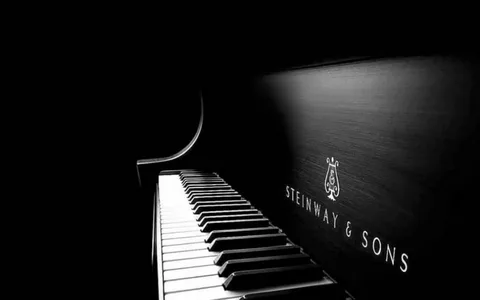

Пианино(Элетронные и акустические)

Пианино — струнно-клавишный музыкальный инструмент с клавиатурой. Обычное пианино имеет 88 клавиш.
Хотя основные принципы работы фортепиано просты, утонченность, необходимая для разработки мощного, но
чувствительного современного фортепиано, делает его также самым сложным из всех механических инструментов,
кроме органа. Струны фортепиано ударяет войлочный молоток, который должен отскочить от струн мгновенно, иначе
это ослабит их вибрации в самом процессе их инициации. Таким образом, молоток должен свободно лететь к струнам.
Чтобы пианист сохранил максимальный контроль над громкостью, расстояние свободного полета молотка должно быть как можно меньше.
Performance P118 Пианино акустическое, черное, фурнитура хром, W.Steinberg
1 336 000 kzt

Performance P125E Пианино акустическое, черное, фурнитура хром, W.Steinberg
1 336 000 kzt

Performance P118 Пианино акустическое, черное, латунная фурнитура, W.Steinberg
1 405 000 kzt

Performance P121 Пианино акустическое, черное, фурнитура хром, W.Steinberg
1 475 000 kzt
YAMAHA JU109 PE АКУСТИЧЕСКОЕ ПИАНИНО, 109СМ
1 975 000 kzt
YAMAHA JU109 PE АКУСТИЧЕСКОЕ ПИАНИНО, 109СМ
2 105 000 kzt

YAMAHA JX113T PE АКУСТИЧЕСКОЕ ПИАНИНО, 113СМ
2 508 000 kzt

YAMAHA JX113T-SILENT PE АКУСТИЧЕСКОЕ ПИАНИНО, САЙЛЕНТ 113СМ
2 550 000 kzt

Цифровое пианино Casio CDP-S110BK
199 000 kzt
Цифровое пианино Casio PX-770BKC7
480 000 kzt

Цифровое пианино Casio PX-770WEC7
689 000 kzt

Цифровое пианино Casio PX-770WEC7
689 000 kzt